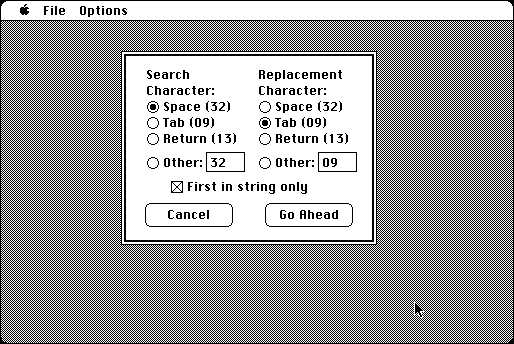

Download
Swapper.zip (12K) Swapper repackaged into a zipped hfs disk image and checksum file. The disk image can be mounted with Mini vMac.
Swapper.sit.hqx (12K) Swapper in the original format.
copyright: Ralph S. Sutherland
mod date: Dec 10, 1993
license: freeware
official url :
Mac Stuff
Search in files for a character and replace with another character. “Useful for changing strings of spaces to tabs or LFs to CRs for instance.“

If you find these downloads useful, please consider helping the Gryphel Project, which hosts them.
Here are the md5 checksums for the downloads, signed with Gryphel Key 5:
--------- GRY SIGNED TEXT --------- 17212c9146bdb04ec5dfc139399a44b3 Swapper.zip 35a32d0fe0d92b725193761c37bd0785 Swapper.sit.hqx ------- BEGIN GRY SIGNATURE ------- Gry/4Xa8CFcUzxdN/HvD9ULA0xMzRikWdIfMDhQdr/kHebVnfdp90YNrXeC+8YKx W4IdMPJqFuscN55352udHJbgqC+bqEWsVY+faKzMc6Cm9xIDB6RtzvT2Csn3Hl8A NDNwY2/h5Eu6k3dhopvUYReVZFSJ0CsSsBvV00kLkN+6Yp014D6fx/MktGSkz3Gw -------- END GRY SIGNATURE --------